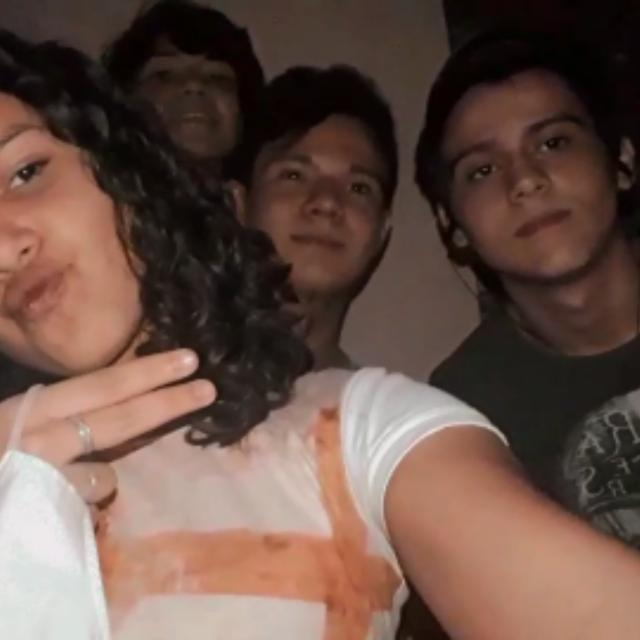
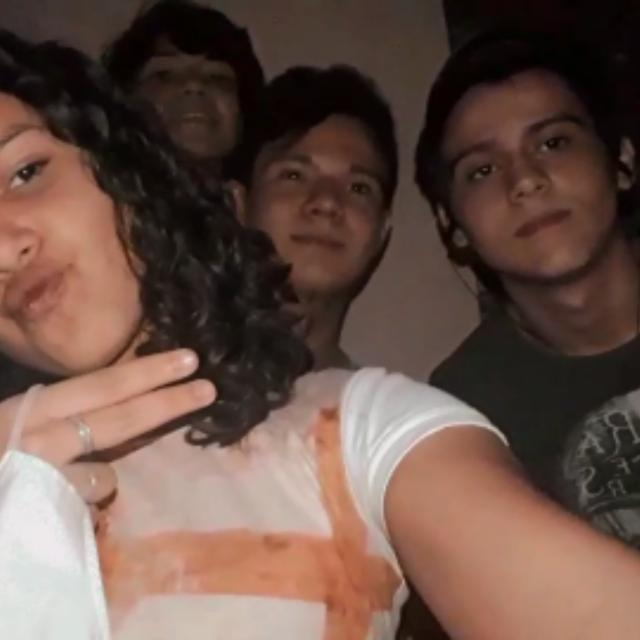
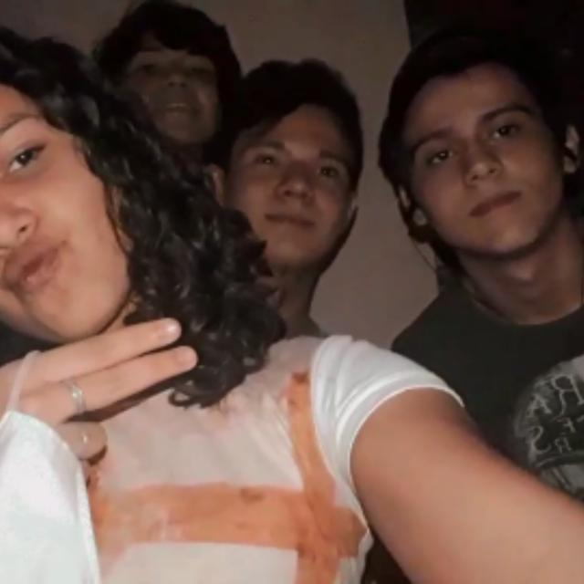

Querida Jask,
Nesses anos em que tenho vivenciado o prazer de dividir experiências com você tenho aprendido bastante coisas, afinal são quase 3 anos vivendo ao lado do amor da minha vida que tanto agrega à minha vida. É por você que eu sou apaixonado, sou gamado em você. Sou fascinado pela nossa história e esperançoso sobre nosso futuro, óbvio. Mas o propósito do conteúdo escrito dessa carta não é somente explanar meus diversos pontos de paixão por você ou como você é maravilhosa. Gostaria de fazer uma pequena linha do tempo da nossa história. Iniciando pelo início, claro...
O ano era 2019, nossa relação era apenas de coordenador e coroinha. Nós conversávamos de acordo com essa relação e íamos para confraternizações, brincávamos com os coroinhas etc. Mas até então, não éramos nem sequer próximos. Aos poucos nossa relação foi se estreitando à nível de amizade. Recordo-me de após uma missa bem cansativa na vida de coordenador e coroinha, você olhou para meu rosto, eu com o rosto todo oleoso de suado, e você se aproxima e começa a limpar meu rosto. Eu estava tão cansado e a sua ação foi tão inesperada para mim, porque até eu tava com nojo de mim naquele estado, que aquilo me impressionou. Acho que esse foi um dos primeiros momentos em que surgiu uma fagulha de paixão dentro do meu peito pela querida e amada Jask.
Temos vários outros momentos juntos nessa nossa linha do tempo, anterior à nossa forte amizade, que a princípio parecem momentos inofensivos diante da magnitude e intensidade de nossa relação atualmente, mas que, na perspectiva de nossa história, foram construindo tijolinho por tijolinho. Lembra de nós acalmando a Stacy em um momento de louvor do Shalom, certo?! Eu também lembro, e esse é o segundo marco que gostaria de mencionar na nossa linha do tempo. Foi um momento marcante pois, oramos juntos nela, e eu senti naquele momento uma ligação com você, que posso até não saber explicar, mas sim, foi diferente e único. Naquela parcela ínfima de tempo, um tempo muito precioso, em que acho que algo muito bom desenvolveu-se entre nós fortemente a partir dali.
Até então, o éramos? Amigos? Colegas? Não sei, mas nossa relação já não era simplesmente coordenador e coroinha. Muitas memórias poderiam estar aqui presentes neste texto (como o CQC, A7V, aniversários, reuniões com você mexendo no celular etc.), mas fazer uma ata de quase três anos demoraria quase uma década para escrever e para ler. Mas antes de ir para a próxima etapa na nossa linha do tempo, gostaria de mencionar mais uma outra memória que tenho de nós, ainda nesse limbo entre "coleguisse" e amizade. Recordo-me de quando eu contei para você que eu era empata e você contou para a Mary. Daí depois você me disse que a Mary queria conversar comigo pois ela também sentia coisas semelhantes. Acho que a partir desse momento nós éramos algo mais próximos de amigos do que de colegas.
Mas e aí? Como passamos a ser amigos? Quando essa nossa relação surgiu? E é agora que eu puxo as memórias dos primórdios do coral dos coroinhas. Os ensaios estão sempre presentes na nossa história desde então... Cada vez que envolvíamo-nos mais no coral e o coral ganhava forma, mais ensaios eram marcados e nós começamos a nos ver com bem mais frequência. Também é nessa etapa em que acho que houve uma alavancada na nossa comunicação até mesmo via WhatsApp. Anteriormente a essa fase nossa troca de mensagens era algo mais esporádico, só mensagens em grupos, marcando ensaio, conversa sobre missas, escalas, reuniões ou respondendo o status mesmo.
Em meio a tudo isso, um cenário em que estávamos mais próximos um do outro, mas ainda tão distantes, se comparado ao que somos hoje, surgiu uma pandemia: o covid-19. O vírus chegou assolando muitas naçoes, na saúde respiratória, física e mental. Lockdown foi decretado ainda em março de 2020, com muitas preocupações de políticas públicas, econômicas, educacionais e milhões de outras preocupações estavam à tona. A princípio estaríamos restritos ao contato físico e encontros como já estávamos desenvolvendo. Mas agora chega uma nova etapa na nossa história, os ensaios do mais novo coral: Renova-me.
O decreto de isolamento social não nos impedia de marcar alguns ensaios, afinal, estávamos até servindo, não é? As missas não poderiam parar, então ocorriam dentro da igreja fechada e a missa era transmitida, e ainda servíamos todos de máscara. Nessa época muitos ensaios ocorreram, e aí o ápice de nossa forte amizade teve um começo. Nessa mesma época começamos a visitar o Ellder esporadicamente para dar uma força para ele no momento difícil que ele enfretava, e no início eram visitinhas rápidas antes ou depois do ensaio. Em meio a tudo isso ocorrendo, nós fomos nos aproximando mais aos poucos e chegou um momento que simplesmente "poof!", amizade sensacional feita. Acho que é inegável a conexão que tínhamos e temos até hoje, só bastou o tempo até que descobríssemos essa conexão.

Antes que percebêssemos, os ensaios não eram mais pontuais e as visitas ao Ellder não eram mais esporádicas, isso tudo já havia virado rotina. E em vários momentos eu já havia cogitado ter uma "paixonite" pela bela e querida Jask, mas logo fugia dessa ideia, afinal, a diferença de idade assolava minha mente e também havia o Hiury nessa história. Inclusive, foi também nessa época em que dei-lhe esse apelido e já estávamos conversando desde o "bom dia" até o "boa noite". Para contextualizar ainda melhor esse período, recordo-me que comecei a eventualmente ir no Gui para conversar com ele depois de muitos meses sem vê-lo pessoalmente. Lembro-me muito bem de eu dizendo várias vezes para ele "Gui, quero me apaixonar", pois o contexto global não estava agradável, principalmente em saúde mental e eu me sentia apático. Mal sabia eu que o desejo logo se tornaria realidade. O sentimento já estava circundando-me, só não havia lhe dado a devida atenção ainda. Fiz muitas artes e escrevi muitas letras no lockdown da pandemia. Um certo dia sentei e comecei a tentar compor uma música para você, pois já éramos melhores amigos e eu queria lhe fazer essa homenagem, afinal, eu já estáva no hype de compor na pandemia. O louco na composição dessa música é que a ideia inicial, quando me sentei para compô-la, não era para ser uma música de amor, mas foi o tema da canção que surgiu ao compor pensando em ti.
Após esse episódio em minha vida fiquei bastante confuso ao me perguntar porquê estar relacionando-lhe em minha mente tanto ao amor e estar pensando em você tantas vezes ao dia. Eu já sentia saudade constantemente de estar com você. Sempre encontrava desculpas para marcar ensaios, para ir no Ellder, dar voltas de moto e tudo o que desse para inventar mais para ficar com você. E eu comecei a perceber que isso estava acontecendo, que eu estava me apaixonando de verdade por você ao nível de eu não conseguir mais ignorar. Fiquei em um grande dilema, pois você estava com o Hiury e a diferença de idades ainda me assustava. Nessa época o Gui me aconselhou e me escutou bastante, foi muito importante para as decisões que eu tomei nessa época e para meu acolhimento às minhas próprias emoções, o que incluía você. Depois de um bom tempo me culpando e tentando ignorar o sentimento, eu maturei bastante a ideia de realmente estar apaixonado pela querida e adorável Jask, e eu já estava explodindo de amores quando finalmente decidi aceitar esse sentimento. Após essa aceitação e percebimento da sua importância no meu dia a dia, nas suas companhias, nas nossas conversas, nos nossos rolês escondidos, finalmente decidi batizar aquela música que eu havia composto para você, dei-lhe o nome de "O Nós se tornou a melhor parte", e o próprio título e refrão da música já explicam a razão. A partir daqui eu já flertava sutilmente através das mensagens que trocávamos, sempre em tom de brincadeira para dar aquela disfarçada, mas que no fundo era muito sério.
Após um tempo com esse sentimento à flor da pele e alguns dias após o término com o Hiury, decidi-me veementemente a declarar-me para você e dizer-lhe a verdade sobre o que eu sentia. Então em um dia após o ensaio e visita ao Ellder, conduzindo-lhe para a sua casa, disse-lhe que queria lhe contar algo mas que não dava mais tempo pois já estava tarde. O relógio marcava aproximadamente 21h50, ou seja, eu havia 10 minutos para me declarar para você, eu já estava desistindo. Mas você disse que se fosse rápido dava tempo, e mesmo sem saber se seria rápido ou não, não desisti da ideia e segui firme conduzindo-lhe a diante do caminho de origem. Então você me questionou: "Está me levando para onde?" e logo lhe perguntei "De 0 a 10, quanto você confia em mim?", e você respondeu 10. A partir daí você já sabe toda a história e foi só alegria e euforia para mim.
Tive que resumir e muito essa "pré-história" do Nós. Mas acredito que até aqui já concluí meu objetivo com essa carta: recordar de onde partimos para ver com gratidão onde estamos, pois sou muito feliz com o que somos e construímos até hoje com o Nós. Toda essa história é tão importante para mim. Nossa história nós sabemos. Sinto, olhando para trás, que cada passo foi importante. Aproveito para citar a letra: "Parte pro ataque com o direito de fracasso, mas meu irmão se tu vencer, tu vai ver a importância de cada passo". Sim, eu venci e estou vendo a importância de cada passo. E obrigado Jask, por ser minha vitória. Obrigado por estar presente em minha vida e me dar tanta força, apoio, amor e carinho desde então. Você é super importante na minha vida e eu te amo enormemente.
.jpg) O ano era 2019, nossa relação era apenas de coordenador e coroinha. Nós conversávamos de acordo com essa relação e íamos para confraternizações, brincávamos com os coroinhas etc. Mas até então, não éramos nem sequer próximos. Aos poucos nossa relação foi se estreitando à nível de amizade. Recordo-me de após uma missa bem cansativa na vida de coordenador e coroinha, você olhou para meu rosto, eu com o rosto todo oleoso de suado, e você se aproxima e começa a limpar meu rosto. Eu estava tão cansado e a sua ação foi tão inesperada para mim, porque até eu tava com nojo de mim naquele estado, que aquilo me impressionou. Acho que esse foi um dos primeiros momentos em que surgiu uma fagulha de paixão dentro do meu peito pela querida e amada Jask.
O ano era 2019, nossa relação era apenas de coordenador e coroinha. Nós conversávamos de acordo com essa relação e íamos para confraternizações, brincávamos com os coroinhas etc. Mas até então, não éramos nem sequer próximos. Aos poucos nossa relação foi se estreitando à nível de amizade. Recordo-me de após uma missa bem cansativa na vida de coordenador e coroinha, você olhou para meu rosto, eu com o rosto todo oleoso de suado, e você se aproxima e começa a limpar meu rosto. Eu estava tão cansado e a sua ação foi tão inesperada para mim, porque até eu tava com nojo de mim naquele estado, que aquilo me impressionou. Acho que esse foi um dos primeiros momentos em que surgiu uma fagulha de paixão dentro do meu peito pela querida e amada Jask.
.jpg) Temos vários outros momentos juntos nessa nossa linha do tempo, anterior à nossa forte amizade, que a princípio parecem momentos inofensivos diante da magnitude e intensidade de nossa relação atualmente, mas que, na perspectiva de nossa história, foram construindo tijolinho por tijolinho. Lembra de nós acalmando a Stacy em um momento de louvor do Shalom, certo?! Eu também lembro, e esse é o segundo marco que gostaria de mencionar na nossa linha do tempo. Foi um momento marcante pois, oramos juntos nela, e eu senti naquele momento uma ligação com você, que posso até não saber explicar, mas sim, foi diferente e único. Naquela parcela ínfima de tempo, um tempo muito precioso, em que acho que algo muito bom desenvolveu-se entre nós fortemente a partir dali.
Temos vários outros momentos juntos nessa nossa linha do tempo, anterior à nossa forte amizade, que a princípio parecem momentos inofensivos diante da magnitude e intensidade de nossa relação atualmente, mas que, na perspectiva de nossa história, foram construindo tijolinho por tijolinho. Lembra de nós acalmando a Stacy em um momento de louvor do Shalom, certo?! Eu também lembro, e esse é o segundo marco que gostaria de mencionar na nossa linha do tempo. Foi um momento marcante pois, oramos juntos nela, e eu senti naquele momento uma ligação com você, que posso até não saber explicar, mas sim, foi diferente e único. Naquela parcela ínfima de tempo, um tempo muito precioso, em que acho que algo muito bom desenvolveu-se entre nós fortemente a partir dali.
.jpg) Até então, o éramos? Amigos? Colegas? Não sei, mas nossa relação já não era simplesmente coordenador e coroinha. Muitas memórias poderiam estar aqui presentes neste texto (como o CQC, A7V, aniversários, reuniões com você mexendo no celular etc.), mas fazer uma ata de quase três anos demoraria quase uma década para escrever e para ler. Mas antes de ir para a próxima etapa na nossa linha do tempo, gostaria de mencionar mais uma outra memória que tenho de nós, ainda nesse limbo entre "coleguisse" e amizade. Recordo-me de quando eu contei para você que eu era empata e você contou para a Mary. Daí depois você me disse que a Mary queria conversar comigo pois ela também sentia coisas semelhantes. Acho que a partir desse momento nós éramos algo mais próximos de amigos do que de colegas.
Até então, o éramos? Amigos? Colegas? Não sei, mas nossa relação já não era simplesmente coordenador e coroinha. Muitas memórias poderiam estar aqui presentes neste texto (como o CQC, A7V, aniversários, reuniões com você mexendo no celular etc.), mas fazer uma ata de quase três anos demoraria quase uma década para escrever e para ler. Mas antes de ir para a próxima etapa na nossa linha do tempo, gostaria de mencionar mais uma outra memória que tenho de nós, ainda nesse limbo entre "coleguisse" e amizade. Recordo-me de quando eu contei para você que eu era empata e você contou para a Mary. Daí depois você me disse que a Mary queria conversar comigo pois ela também sentia coisas semelhantes. Acho que a partir desse momento nós éramos algo mais próximos de amigos do que de colegas.
.jpg) Mas e aí? Como passamos a ser amigos? Quando essa nossa relação surgiu? E é agora que eu puxo as memórias dos primórdios do coral dos coroinhas. Os ensaios estão sempre presentes na nossa história desde então... Cada vez que envolvíamo-nos mais no coral e o coral ganhava forma, mais ensaios eram marcados e nós começamos a nos ver com bem mais frequência. Também é nessa etapa em que acho que houve uma alavancada na nossa comunicação até mesmo via WhatsApp. Anteriormente a essa fase nossa troca de mensagens era algo mais esporádico, só mensagens em grupos, marcando ensaio, conversa sobre missas, escalas, reuniões ou respondendo o status mesmo.
Mas e aí? Como passamos a ser amigos? Quando essa nossa relação surgiu? E é agora que eu puxo as memórias dos primórdios do coral dos coroinhas. Os ensaios estão sempre presentes na nossa história desde então... Cada vez que envolvíamo-nos mais no coral e o coral ganhava forma, mais ensaios eram marcados e nós começamos a nos ver com bem mais frequência. Também é nessa etapa em que acho que houve uma alavancada na nossa comunicação até mesmo via WhatsApp. Anteriormente a essa fase nossa troca de mensagens era algo mais esporádico, só mensagens em grupos, marcando ensaio, conversa sobre missas, escalas, reuniões ou respondendo o status mesmo.
.jpg) Em meio a tudo isso, um cenário em que estávamos mais próximos um do outro, mas ainda tão distantes, se comparado ao que somos hoje, surgiu uma pandemia: o covid-19. O vírus chegou assolando muitas naçoes, na saúde respiratória, física e mental. Lockdown foi decretado ainda em março de 2020, com muitas preocupações de políticas públicas, econômicas, educacionais e milhões de outras preocupações estavam à tona. A princípio estaríamos restritos ao contato físico e encontros como já estávamos desenvolvendo. Mas agora chega uma nova etapa na nossa história, os ensaios do mais novo coral: Renova-me.
Em meio a tudo isso, um cenário em que estávamos mais próximos um do outro, mas ainda tão distantes, se comparado ao que somos hoje, surgiu uma pandemia: o covid-19. O vírus chegou assolando muitas naçoes, na saúde respiratória, física e mental. Lockdown foi decretado ainda em março de 2020, com muitas preocupações de políticas públicas, econômicas, educacionais e milhões de outras preocupações estavam à tona. A princípio estaríamos restritos ao contato físico e encontros como já estávamos desenvolvendo. Mas agora chega uma nova etapa na nossa história, os ensaios do mais novo coral: Renova-me.
.jpg) O decreto de isolamento social não nos impedia de marcar alguns ensaios, afinal, estávamos até servindo, não é? As missas não poderiam parar, então ocorriam dentro da igreja fechada e a missa era transmitida, e ainda servíamos todos de máscara. Nessa época muitos ensaios ocorreram, e aí o ápice de nossa forte amizade teve um começo. Nessa mesma época começamos a visitar o Ellder esporadicamente para dar uma força para ele no momento difícil que ele enfretava, e no início eram visitinhas rápidas antes ou depois do ensaio. Em meio a tudo isso ocorrendo, nós fomos nos aproximando mais aos poucos e chegou um momento que simplesmente "poof!", amizade sensacional feita. Acho que é inegável a conexão que tínhamos e temos até hoje, só bastou o tempo até que descobríssemos essa conexão.

Antes que percebêssemos, os ensaios não eram mais pontuais e as visitas ao Ellder não eram mais esporádicas, isso tudo já havia virado rotina. E em vários momentos eu já havia cogitado ter uma "paixonite" pela bela e querida Jask, mas logo fugia dessa ideia, afinal, a diferença de idade assolava minha mente e também havia o Hiury nessa história. Inclusive, foi também nessa época em que dei-lhe esse apelido e já estávamos conversando desde o "bom dia" até o "boa noite". Para contextualizar ainda melhor esse período, recordo-me que comecei a eventualmente ir no Gui para conversar com ele depois de muitos meses sem vê-lo pessoalmente. Lembro-me muito bem de eu dizendo várias vezes para ele "Gui, quero me apaixonar", pois o contexto global não estava agradável, principalmente em saúde mental e eu me sentia apático. Mal sabia eu que o desejo logo se tornaria realidade. O sentimento já estava circundando-me, só não havia lhe dado a devida atenção ainda. Fiz muitas artes e escrevi muitas letras no lockdown da pandemia. Um certo dia sentei e comecei a tentar compor uma música para você, pois já éramos melhores amigos e eu queria lhe fazer essa homenagem, afinal, eu já estáva no hype de compor na pandemia. O louco na composição dessa música é que a ideia inicial, quando me sentei para compô-la, não era para ser uma música de amor, mas foi o tema da canção que surgiu ao compor pensando em ti.
O decreto de isolamento social não nos impedia de marcar alguns ensaios, afinal, estávamos até servindo, não é? As missas não poderiam parar, então ocorriam dentro da igreja fechada e a missa era transmitida, e ainda servíamos todos de máscara. Nessa época muitos ensaios ocorreram, e aí o ápice de nossa forte amizade teve um começo. Nessa mesma época começamos a visitar o Ellder esporadicamente para dar uma força para ele no momento difícil que ele enfretava, e no início eram visitinhas rápidas antes ou depois do ensaio. Em meio a tudo isso ocorrendo, nós fomos nos aproximando mais aos poucos e chegou um momento que simplesmente "poof!", amizade sensacional feita. Acho que é inegável a conexão que tínhamos e temos até hoje, só bastou o tempo até que descobríssemos essa conexão.

Antes que percebêssemos, os ensaios não eram mais pontuais e as visitas ao Ellder não eram mais esporádicas, isso tudo já havia virado rotina. E em vários momentos eu já havia cogitado ter uma "paixonite" pela bela e querida Jask, mas logo fugia dessa ideia, afinal, a diferença de idade assolava minha mente e também havia o Hiury nessa história. Inclusive, foi também nessa época em que dei-lhe esse apelido e já estávamos conversando desde o "bom dia" até o "boa noite". Para contextualizar ainda melhor esse período, recordo-me que comecei a eventualmente ir no Gui para conversar com ele depois de muitos meses sem vê-lo pessoalmente. Lembro-me muito bem de eu dizendo várias vezes para ele "Gui, quero me apaixonar", pois o contexto global não estava agradável, principalmente em saúde mental e eu me sentia apático. Mal sabia eu que o desejo logo se tornaria realidade. O sentimento já estava circundando-me, só não havia lhe dado a devida atenção ainda. Fiz muitas artes e escrevi muitas letras no lockdown da pandemia. Um certo dia sentei e comecei a tentar compor uma música para você, pois já éramos melhores amigos e eu queria lhe fazer essa homenagem, afinal, eu já estáva no hype de compor na pandemia. O louco na composição dessa música é que a ideia inicial, quando me sentei para compô-la, não era para ser uma música de amor, mas foi o tema da canção que surgiu ao compor pensando em ti.
.jpg) Após esse episódio em minha vida fiquei bastante confuso ao me perguntar porquê estar relacionando-lhe em minha mente tanto ao amor e estar pensando em você tantas vezes ao dia. Eu já sentia saudade constantemente de estar com você. Sempre encontrava desculpas para marcar ensaios, para ir no Ellder, dar voltas de moto e tudo o que desse para inventar mais para ficar com você. E eu comecei a perceber que isso estava acontecendo, que eu estava me apaixonando de verdade por você ao nível de eu não conseguir mais ignorar. Fiquei em um grande dilema, pois você estava com o Hiury e a diferença de idades ainda me assustava. Nessa época o Gui me aconselhou e me escutou bastante, foi muito importante para as decisões que eu tomei nessa época e para meu acolhimento às minhas próprias emoções, o que incluía você. Depois de um bom tempo me culpando e tentando ignorar o sentimento, eu maturei bastante a ideia de realmente estar apaixonado pela querida e adorável Jask, e eu já estava explodindo de amores quando finalmente decidi aceitar esse sentimento. Após essa aceitação e percebimento da sua importância no meu dia a dia, nas suas companhias, nas nossas conversas, nos nossos rolês escondidos, finalmente decidi batizar aquela música que eu havia composto para você, dei-lhe o nome de "O Nós se tornou a melhor parte", e o próprio título e refrão da música já explicam a razão. A partir daqui eu já flertava sutilmente através das mensagens que trocávamos, sempre em tom de brincadeira para dar aquela disfarçada, mas que no fundo era muito sério.
Após esse episódio em minha vida fiquei bastante confuso ao me perguntar porquê estar relacionando-lhe em minha mente tanto ao amor e estar pensando em você tantas vezes ao dia. Eu já sentia saudade constantemente de estar com você. Sempre encontrava desculpas para marcar ensaios, para ir no Ellder, dar voltas de moto e tudo o que desse para inventar mais para ficar com você. E eu comecei a perceber que isso estava acontecendo, que eu estava me apaixonando de verdade por você ao nível de eu não conseguir mais ignorar. Fiquei em um grande dilema, pois você estava com o Hiury e a diferença de idades ainda me assustava. Nessa época o Gui me aconselhou e me escutou bastante, foi muito importante para as decisões que eu tomei nessa época e para meu acolhimento às minhas próprias emoções, o que incluía você. Depois de um bom tempo me culpando e tentando ignorar o sentimento, eu maturei bastante a ideia de realmente estar apaixonado pela querida e adorável Jask, e eu já estava explodindo de amores quando finalmente decidi aceitar esse sentimento. Após essa aceitação e percebimento da sua importância no meu dia a dia, nas suas companhias, nas nossas conversas, nos nossos rolês escondidos, finalmente decidi batizar aquela música que eu havia composto para você, dei-lhe o nome de "O Nós se tornou a melhor parte", e o próprio título e refrão da música já explicam a razão. A partir daqui eu já flertava sutilmente através das mensagens que trocávamos, sempre em tom de brincadeira para dar aquela disfarçada, mas que no fundo era muito sério.
.jpg) Após um tempo com esse sentimento à flor da pele e alguns dias após o término com o Hiury, decidi-me veementemente a declarar-me para você e dizer-lhe a verdade sobre o que eu sentia. Então em um dia após o ensaio e visita ao Ellder, conduzindo-lhe para a sua casa, disse-lhe que queria lhe contar algo mas que não dava mais tempo pois já estava tarde. O relógio marcava aproximadamente 21h50, ou seja, eu havia 10 minutos para me declarar para você, eu já estava desistindo. Mas você disse que se fosse rápido dava tempo, e mesmo sem saber se seria rápido ou não, não desisti da ideia e segui firme conduzindo-lhe a diante do caminho de origem. Então você me questionou: "Está me levando para onde?" e logo lhe perguntei "De 0 a 10, quanto você confia em mim?", e você respondeu 10. A partir daí você já sabe toda a história e foi só alegria e euforia para mim.
Após um tempo com esse sentimento à flor da pele e alguns dias após o término com o Hiury, decidi-me veementemente a declarar-me para você e dizer-lhe a verdade sobre o que eu sentia. Então em um dia após o ensaio e visita ao Ellder, conduzindo-lhe para a sua casa, disse-lhe que queria lhe contar algo mas que não dava mais tempo pois já estava tarde. O relógio marcava aproximadamente 21h50, ou seja, eu havia 10 minutos para me declarar para você, eu já estava desistindo. Mas você disse que se fosse rápido dava tempo, e mesmo sem saber se seria rápido ou não, não desisti da ideia e segui firme conduzindo-lhe a diante do caminho de origem. Então você me questionou: "Está me levando para onde?" e logo lhe perguntei "De 0 a 10, quanto você confia em mim?", e você respondeu 10. A partir daí você já sabe toda a história e foi só alegria e euforia para mim.
.jpeg)